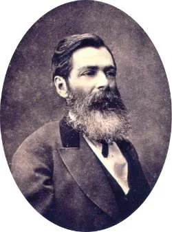

José de Alencar

José de Alencar é considerado um dos maiores expoentes do romantismo no Brasil. Atuou como jornalista, crítico, advogado, dramaturgo e político. Além disso, foi Patrono da cadeira nº 23 da Academia Brasileira de Letras (ABL). Na primeira geração romântica, com teor nacionalista e indianista, Alencar exaltou diversos aspectos nacionais e a figura do índio como herói brasileiro. Suas principais obras indianistas foram: O Guarani (1857), Iracema (1865) e Ubirajara (1874).